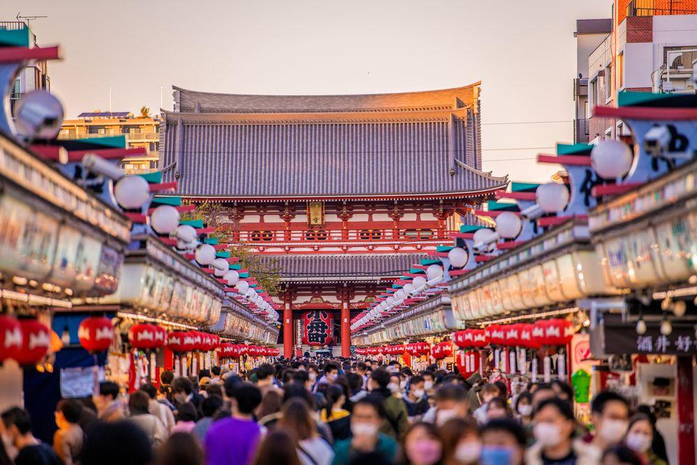
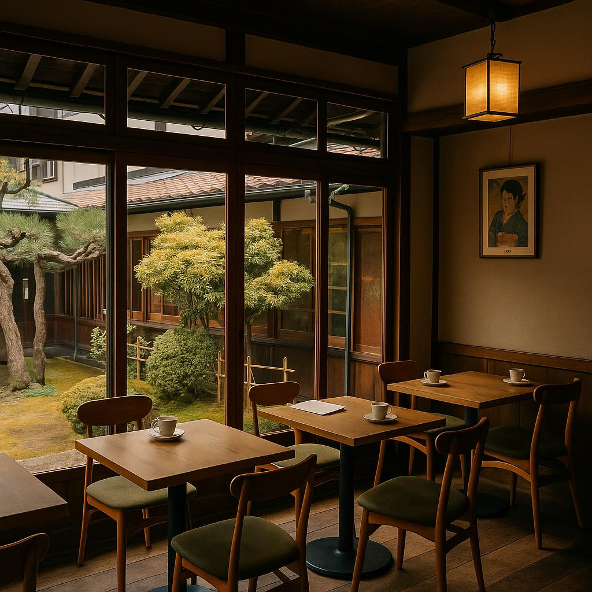
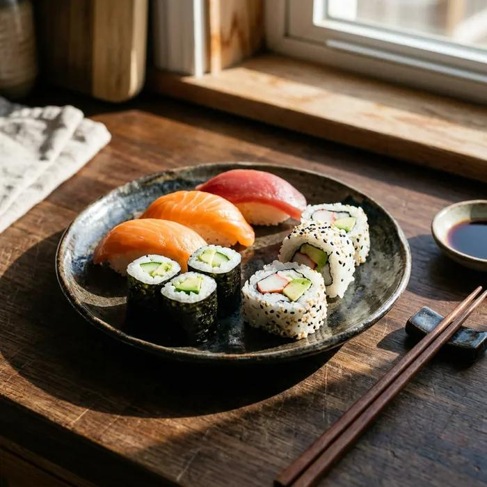
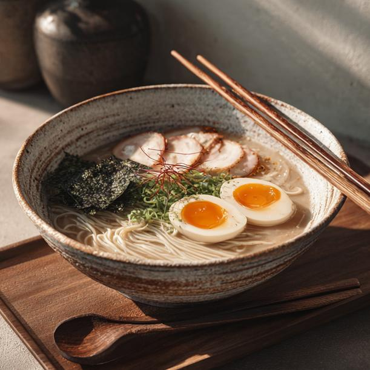
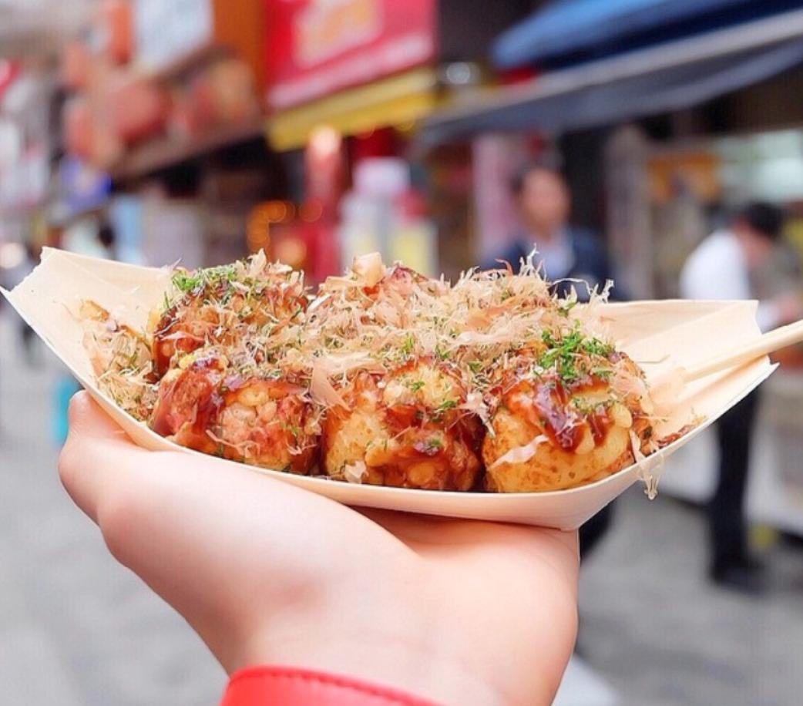

關於我
嗨！我是小江，很高興認識你！
我是一個喜歡旅行、攝影和探索新事物的人。 我喜歡走進不同的城市，欣賞街道風景、 特別的建築，以及充滿特色的咖啡廳。
除了旅行，我也很喜歡品嚐美食。 每到一個新的地方，我都想認識當地的特色料理， 並用照片記錄美麗的風景和美味的食物。
對我來說，旅行不只是看風景， 也是體驗不同文化、發現生活美好的方式。 希望透過這個網站，分享我的興趣、 旅行回憶和生活中的小故事。
嗨！我是小江，很高興認識你！
我是一個喜歡旅行、攝影和探索新事物的人。 我喜歡走進不同的城市，欣賞街道風景、 特別的建築，以及充滿特色的咖啡廳。
除了旅行，我也很喜歡品嚐美食。 每到一個新的地方，我都想認識當地的特色料理， 並用照片記錄美麗的風景和美味的食物。
對我來說，旅行不只是看風景， 也是體驗不同文化、發現生活美好的方式。 希望透過這個網站，分享我的興趣、 旅行回憶和生活中的小故事。
MY TRAVEL
我喜歡用相機記錄旅行中的美好時光， 欣賞不同城市的風景、建築和街道。
京都是一座充滿日本傳統文化的城市。 清水寺的建築和周圍的自然風景， 讓人感受到寧靜又美麗的氣氛。

東京是一座充滿活力的城市， 有熱鬧的街道、特色商店和現代建築。 我喜歡觀察城市中的日常風景。
道頓堀有熱鬧的街道、特色招牌 和各種美食，是大阪很有代表性的地方。 每個角落都有不同的風景。

我喜歡探索不同城市裡有特色的咖啡廳。 溫暖的陽光、舒適的空間和一杯咖啡， 都能讓旅行變得更加美好。 我也喜歡用照片記錄咖啡廳裡的美麗角落。
MY FAVORITE FOOD
旅行除了欣賞風景，也不能錯過當地美食。 我喜歡品嚐不同料理，感受每個地方的特色。

壽司是日本很有代表性的料理， 以醋飯搭配魚類或其他食材， 味道簡單又有特色。

拉麵有不同風味的湯頭， 搭配麵條、叉燒和配料， 是我很喜歡的日本美食之一。

章魚燒是大阪的特色小吃， 外層香軟，裡面有章魚和配料， 是很受歡迎的街頭美食。